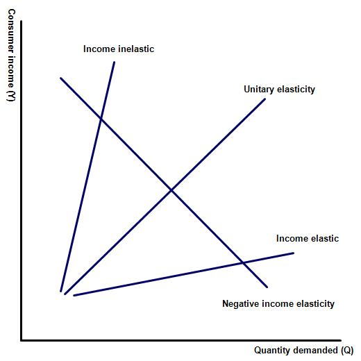
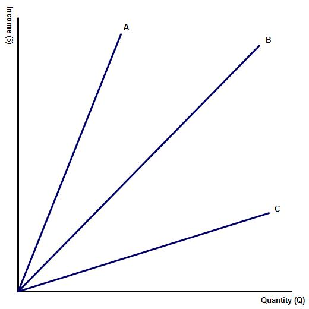
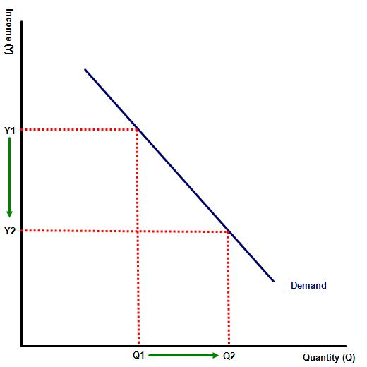
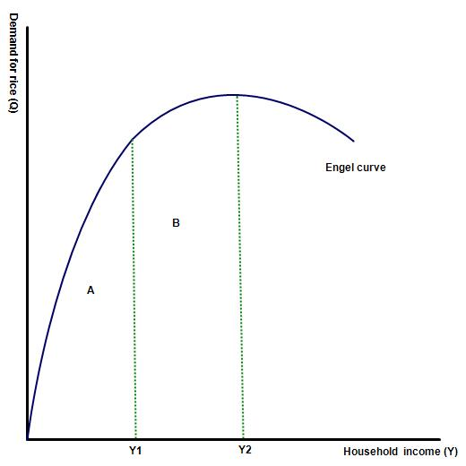
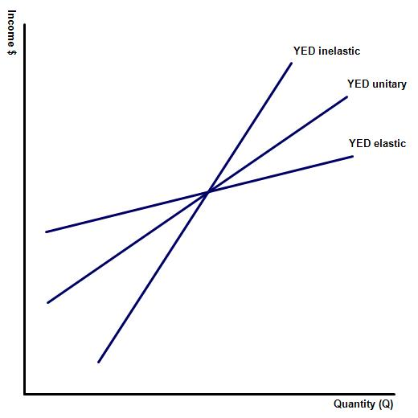

IB Docs (2) Team
IB Docs (2) Team

Unit 2.5: Income elasticity of demand (YED)

IntroductionThis lesson focuses on the third type of elasticity in economics - income elasticity of demand or YED. I find that many IB students will confuse this concept with price elasticity of demand. You will need to emphasis to your classes that while a number of products, especially luxury goods and services may be both YED and PED elastic, it is possible for a product to be either YED elastic and PED inelastic or vice versa. This is because one determinate of PED elasticity is the number of available substitute and complimentary products. This is not a factor in determining YED elasticity.
This page also contains information on inferior goods, products which have an inverse relationship, making them different to other forms of goods and services - which we collectively class 'normal goods'.
Enquiry question
What is Income elasticity of demand and what determines the YED elasticity of a product or not?
What are the implications of income elasticity of demand for businesses and the economy as a whole?
Teaching notes:
Lesson time: 80 minutes
Learning objectives:
Explain the concept of income elasticity of demand, understanding that it involves responsiveness of demand (and hence a shifting demand curve) to a change in income.
Calculate YED using the equation percentage change in quantity demanded / percentage change in income
An understanding that normal goods have a positive value of YED while inferior goods have a negative value of YED.
Distinguish, with reference to YED, between necessity (income inelastic) goods and luxury (income elastic) goods.
Examine the implications for producers and for the economy as a whole, of a relatively low YED for primary products, a relatively higher YED for manufactured products and an even higher YED for services.
Lesson notes:
1. Opening activity - begin the lesson with the introductory exercise. This involves drawing the market for four products on the board, e.g. luxury cars, bread, used cars and public transport.and ask students to determine which is which. This is a question that I often start with and it works well. (10 minutes)
2. Processes - technical vocabulary - the students can learn the vocabulary and the relevant concepts by studying the handout that you will distribute and / or by watching the powerpoint presentation or video included on this page. (10 minutes)
3. Activity - contains a short video which explains the concept of YED. After the video you should distribute the handout which contains class notes and a number of practise activities. The last of these is a HL only question, requiring students to calculate the YED for a variety of products, from the information provided.
4. Reinforcement - complete the activities attached to the handout. I normally allow around 45 minutes for each activity, including the HL activity. 35 minutes for SL students not completing activity 10. Activity is the one that I use as a possible link to TOK, encouraging my classes to make the connection between economics and TOK at every opportunity.
5. Activity 11- a homework exercise, which can also be completed in class. It contains a paper one (section B) type question that I wrote myself, making it suitable for homework because your classes will not be able to find the mark scheme on line. (allow 10 minutes to discuss)
Beginning activity
Draw four YED diagrams on the whiteboard - one YED elastic, one YED inelastic, one unitary and one representing an inferior good. Ask your class to match the diagrams to the 4 products that you give them e.g. luxury cars, bread, used cars and public transport.
Key terms:
Income elasticity of demand (YED) - the responsiveness of demand for a good or service following a change in real income levels.
YED formulae - % change in demand for a good or service / % change in consumer income.
Normal good - a good or service with a direct relationship between income and demand, i.e a good where demand for the product rises as income rises.
Inferior good - a good or service with an inverse relationship between income and demand, i.e a good where demand falls as income rises.
Engels law - the theory which states that as a households income rises the percentage spent on some purchases e.g. food decreases, while the proportion spent on other goods (such as luxury goods) increases.
YED range of values
Goods and services with a YED value > 1 are elastic (i.e a top heavy fraction) as the % change in demand is greater than the initial % change in income.
Goods and services with a YED value > 0 but < 1 are inelastic (i.e a bottom heavy fraction) as the % change in demand is smaller than the initial % change in income.
Goods and services with a YED value = 1 have unitary elasticity as the % change in demand is equal to the initial % change in income.
Goods and services with a YED value < 0 have negative elasticity and are deemed inferior goods and services. Unlike normal goods the relationship between quantity demanded and consumer income is inverse.
The class handout and accompanying activities are available as a class handout at:  YED class notes
YED class notes
Activity 1
Write down again a list of your 10 main expenditures (in a month) and again next to each item write down whether you consider the good or service to be a basic necessity or a luxury item? Now imagine that your income rises by 50%. Next to each assign one of the following labels to each item:
a. Following my rise in income of 50%, I would increase my consumption of the product by more than 50%.
b. Following my rise in income of 50%, I would increase my consumption of the product by less than 50%.
c. Following my rise in income of 50%, I would increase my consumption of the product by about 50%.
Decoding your list
Your should have compiled a list of 10 goods and services that they frequently purchase and next to each should have written a, b or c. It will be obvious that the (a) list includes income elastic goods, B inelastic e.t.c.
Why did you make those choices?
Perhaps your selected items as (a) because they consider them to be of only marginal importance to their lives - luxury items which are nice to have but previously they could live without? Now you are enjoying a higher income, however, they will purchase more of these items.
Now consider the items they selected (b) for. Why was this? Perhaps these items are necessary items for them? Basic necessities which they do not necessarily need more of, once their disposable income rises?
Activity 2: Video activity
Watch the video on YED and then complete the activities that follow:
(a) A worker is awarded a 10% pay rise (after taxes have been deducted). In response the consumer cancels their cheap £ 30 a month membership at a sports club and upgraded to the premium membership, which costs £ 40. Calculate the YED for

premiership sports club package?This would be represented by a YED of % change in demand (33%) / % change in income (10%) = YED of 3.33.
(b) Describe the YED of this good.
A YED of 3.33 represents an income elastic product.
(c) Complete the diagram to the right, by adding the appropriate labels.
A - inelastic YED
B - unitary YED
C - elastic YED
(d) Complete the missing summary by filling in the missing words:
As a general rule basic necessity items are income or YED________, meaning that the resulting % change in quantity demanded is ________ than the initial change in real income. By contrast luxury goods are normally YED ________. This means that the resulting % change in quantity demanded is _________ than the initial change in real income. Other products may be unitary or unit elasticity. This means that the resulting % change in quantity demanded is ______ to the initial change in real income. These goods are neither luxury goods or basic necessities and examples might include second hand cars or medium luxury products.
inelastic, lower, elastic, greater, equal.
Activity 3
1. The following table documents the relationship between sales of new cars in the USA and income levels:
a. Complete the missing blanks at the bottom of the table - (numbers in brackets indicate negative values).
| Year | Real GDP growth (%) | Growth in new car sales (%) |
| August 2006 | 2.39 | 1.49 |
| August 2007 | 1.87 | (8.72) |
| August 2008 | (2.77) | (8.11) |
| August 2009 | (0.24) | 0.8 |
| August 2010 | 2.73 | (21) |
| August 2011 | 1.68 | 7 |
| August 2012 | 1.28 | 20.56 |
| August 2013 | 2.66 | 16.28 |
| August 2014 | 2.49 | 16.67 |
| Average for the period | 1.34% | 2.77% |
b. Based on the above figures calculate the level of YED for the new car sales in the USA?
2.77 / 1.34 = 2.07 which makes new car sales income elastic.
c. Describe the relationship between income levels and new car ownership in the USA?
With a YED of 2.07, new car sales are highly income elastic but it is interesting to note that the relationship is not instant - there is a time lag between rising income levels in the US economy and an increase in new purchases, suggesting that consumers consider their likely income moving forward before deciding whether to buy a new car or not?
d. Provide two reasons why the sale of new cars is income elastic.
New cars are a luxury item, even in a nation such as the USA which enjoys high disposable incomes. An American family would normally plan to purchase a new car over a period of 12 months or so and will only do so if they have sufficient confidence in their own financial prospects. This is likely to explain why there is a delay between the US economy picking up in 2010 and sales of new cars rising 18 months or so later. As the US economy went into recession in the period 2007 - 2009 sales of new cars fell dramatically as this was an easy expenditure to cut back on.
Activity 4: Inferior goods
Watch the following short video and then answer the questions which follow:
Questions:

The diagram to the left illustrates an inferior good. This is one that has an inverse relationship between income and demand. As a person's income rises demand for this type of good falls.(a) Provide some examples of inferior goods or services.
Public transport or low cost own brand products.
(b) Inferior goods will have a YED lower than _________
0
(c) Why might public transport be an example of an inferior good?
Following a rise in living standards, for example, a consumer may choose not to use public transport at all and instead drive their car more.
Activity 5
Which of the following goods and services do you think are examples of inferior goods in the USA?
Ramen noodles
Is an example of an inferior good, perhaps because of its popularity amongst college students?
Bread / bread products
No bread and bread products are consumed by all income groups although they are highly income inelastic.
Cheap microwave pizzas
This product is an example of an inferior good. As an individual's disposable income rises they consume higher quality / more expensive pizzas or order take way pizza instead.
Oil
Oil is YED unitary, as a nation's income rises car consumption and industrial output rises.
Public transport
Demand for bus travel, particularly city to city travel rises as income levels fall but there is no correlation between the number of intra-city metro journeys made and income levels - except amongst the super rich (who use private cars) and the very poor who use even cheaper modes of transport.
Used cars
Second hand cars are not inferior goods. As a consumer's income rises many households will give up their used car to buy a brand new one - but this is balanced out by previously low income consumers using their additional income to purchase a second hand car for the first time.
Potatoes
Potatoes are an inferior good with wealthier people enjoying other food products.
Unhealthy foods including junk foods
These are an example of an inferior good as wealthier people tend to buy more organic and other healthier foods.
Supermarket own brand items
Generic food products are also inferior goods, though often similar in quality to branded products.
Samsung smart phones
These are clearly not inferior goods but have a much lower YED than you might think. This is because Samsung smart phones are considered inferior to their main competitor, Apple but of course superior to some other cheap mobile phones.
Activity 6: TOK activity on inferior goods and services
a. Is a quality product always more expensive to manufacture or buy than a mediocre product?
Not necessarily, certainly some luxury products are made with higher levels of workmanship and superior components but in other products this is not necessarily the case. For instance, supermarket own brands are cheaper because of zero advertising, brand promotion and sponsorship costs but the supermarkets actually purchase these goods from the same companies that produce the high priced branded goods.
Similarly, Apple products sell at a premium on the 'build-quality' myth. Yet the products hardware is designed and built in China by the very same designers and workforce that make Apple’s rivals laptops and smartphones.
When Aldi set up a discount store in the UK some affluent people, in the know, used to take in Harrods bags to hide the Aldi merchandise from their snobby friends. Yet the Aldi products kept winning top awards for quality at low prices.
The short answer to this question is no. Specifically an inferior good is inferior to its substitutes and has a YED < 0. In other words as income levels fall demand for the product rises. By contrast a giffen good is a special form of inferior good because in addition to having a negative income elasticity a giffen good will also have a price elasticity of demand lower than zero.
Activity 7
Cigarettes have a negative YED in the USA and Europe. Does this mean that cigarettes are actually inferior goods? What are they inferior to?
Hint:
According to economic theory, because cigarettes have a negative relationship between demand and income levels, they are regarded as an inferior goods.
The underlying assumption for this is that cigarettes are a good associated with poverty. For one, poor individuals may resort to cigarette smoking as a respite from the stresses they face. On the other hand, inferior goods typically have “substitutes” that are of higher quality. We can argue that the alternatives to smoking - healthier ways of getting a buzz, or cigars - can be afforded by people of higher incomes, thus designating cigarettes as an inferior good. Those on higher incomes might also prefer to switch their consumption from tobacco based cigarettes to e-cigarettes / vaping, which while cheaper to consume (per unit) require a larger initial outlay - again reinforcing the view that cigarettes are an inferior good.
Of course, an alternative theory is that there is also a strong positive correlation between individuals with higher income and education levels and healthier lifestyles. Therefore, it may well be that the correlation between income and demand for cigarettes is instead an effect rather than a cause.
Activity 8: Sales activity when incomes and consumer confidence rises
Watch the following short video and then decide which products appear to be YED elastic goods, which appear to be YED inelastic or even inferior goods?
Based on the news reel, the goods and services which appeared to be showing the highest increase in sales were identified as:
Elastic - restaurant sales, building materials, vacations, petrol sales
Inelastic - food and beverage, clothing and retail.

Activity 9: Engel curvesEngels theory states when income for a low-income households rises, demand for some products e.g rice increases. This is because it is considered a normal or even luxury good by households on low incomes. However, the same good is considered a necessity good by households on middle incomes while wealthy households consider the food item an inferior good. This means that as the family’s income rises further their demand for the staple will fall. The diagram to the right illustrates an Engel curve.
Complete the following sentence by filling in the missing blanks.
In area A the YED of rice would be _________, in area B _________ and in area C the YED would be _______________.
A - Normal inelastic
B - zero elasticity (neither inferior or normal)
C - negative (inferior good)
Activity 10: Calculating YED
(a) Sarah receives a pay rise and her income rises from $ 40,000 to $ 50,000. As a result of this she increases her expenditure on holidays from $ 2,000 per year to $ 2,800. She also purchased a more expensive gym membership which now costs $ 100 per month rather the previous $ 80 per month. By contrast her food expenditures rise only from $ 500 per month to $ 520. She also calculates that her monthly expenditures on heating her house did not change. Following her wage rise she spends slightly less on public transport, reducing her monthly expenditure from $ 150 per month to just $ 100.
Calculate her YED for
i. Holidays
Holidays - 1.6
ii. Gym membership
Gym membership - 1
iii. Food
Food - 0.16
iv. Heating for her house
Heating for her house - 0
v. Public transport
Public transport - (1.32)
vi. Explain why her expenditure on public transport fell following her pay rise?
Public transport is an inferior good. As her income rises she uses public transport less often and instead uses more expensive substitutes such as taxis or her own car.
Question (b)
Brian loses his teaching position where he earned £2,500 a month and was instead forced to live of unemployment insurance, where he received just £1,000 a month. As a result he is forced to cancel his planned skiing holiday and instead stay at home, looking for a new position. He also decides against purchasing a new car, which would have cost him £10,000 and instead purchases a cheap second hand model for just £2,000. He also reduces his weekly food bill at the supermarket by identifying certain supermarket brand products, which he can purchase rather than the branded items he purchased previously. In total his food bill fell from £400 a month to £250. As a final cost cutting measure he quits his gym membership and instead takes up jogging and decides to turn down the heating at his house, reducing his monthly gas bill from £120 each month to £90. His spending on rent, internet and electricity remain unchanged.
Calculate his YED for:
i. Car purchases
80 / 60 = 1.33
ii. Food
38 / 60 = 0.63
iii. Gym membership
100 / 60 = 1.67
25 / 60 = 0.42
v. Rent, internet, electricity expenses
0 / 60 = 0
vi. Explain why he is unable or unwilling to reduce his monthly expenditure on rent, internet and electricity?
There are two reasons that might explain why the YED of those products is zero. One factor is that Brian is likely to be in the middle of a rental agreement for his house, internet package e.t.c. and so these are fixed costs, which he cannot reduce in the short run. In the long run, if he remains unemployed then we can expect him to reduce his purchases of those products as well.
Activity 11: Link to the assessment
Income elasticity of demand can be found in paper one and three of the IB economics exams. Paper three (HL only) would contain YED calculations, similar in style to the previous activity, number 10. A typical paper one question might require candidates to reflect on the uses and implications of YED theory. An example from the HL syllabus, which could also be provided as a homework exercise, is included below:
Part (a)
Explain using appropriate diagrams why the income elasticity for manufactured goods and services tends to be higher than the YED for primary products. [10 marks]

Explain means to provide reasons why primary products tend have a lower income elasticity of demand than manufactured goods?
Key terms to define: income elasticity of demand, primary products and manufactured goods.
Responses should include an explanation that many manufactured goods are luxury goods, which see a significant change in quantity demanded when income levels change. Primary goods are generally basic necessities which households consume regardless of their income.
The response also needs to note that while the above statement is a general rule, there are exceptions to this rule, e.g. goods with low income elasticity of demand include tobacco products and fuel. Similarly, examples of primary goods with high YED include luxury commodities such as gold or cavier.
Relevant diagrams should also be included.
Part (b)
“The income elasticity of demand for primary products tends to be lower than that for manufactured products and services.” Using real life examples, evaluate the implications of this for producers and for the economy as a whole. [15 marks]
Command term: Evaluate requires IB students to determine the significance of YED elasticity on the producers of primary products, in comparison to firms producing manufactured goods and services.
Key terms to define: YED
Relevant real life examples include: industries and nations that suffered significantly during the financial crisis of 2007 - 2010 as well as the restraints felt by a number of LEDCs, whose primary exports come from agricultural and primary goods with low YED. This makes it more difficult to take advantage of periods of world economic growth and could be compared with LEDCs e.g. China and Vietnam that export manufactured goods with higher YED.
The significance of this for producers is that during periods of recession or economic stagnation producers of luxury products will see a significant fall in their sales. Examples might include the financial crisis of 2007 - 2010, when a number of global industries in the financial services and luxury car market ran into difficulties.
Firms producing basic commodities are unlikely to see a significant fall in their revenues. Some products may even see a small rise in demand for their products as consumers switch away from luxury substitutes. For example sales of coal / gas may increase if lower incomes prevent households from investing in solar or other forms of energy generation.
However, during periods of economic growth the fortunes of the two businesses are reversed. Given that over a period of time the world economy grows, producers of manufactured products and services are in a better position to take advantage of the opportunities that this offers.
The better responses may also link their response to the difficulties faced by many LEDCs, whose main export revenues come from the sale of primary goods.
Responses should also include diagrams to illustrate goods with high / low YED elasticity.
 Twitter
Twitter
 Facebook
Facebook
 LinkedIn
LinkedIn